M3 Expressive shell
Animated light/dark theming, soft elevation, an app bar with an inline pill menu, and floating radius-24 workspace cards.
Desktop Material is an independent M3 Expressive remake of GitHub Desktop — an icon navigation rail, a floating pill toolbar, browser-like repo tabs, real multi-account, versioned settings, and non-modal dialogs, wrapped in an animated light/dark shell.
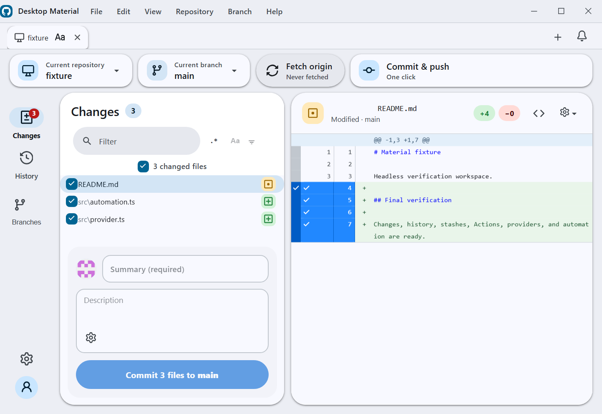
Everything below is implemented and on main — the full
GitHub Desktop workflow, rebuilt around Material Design 3.
Animated light/dark theming, soft elevation, an app bar with an inline pill menu, and floating radius-24 workspace cards.
A left rail for Changes (with a badge), History, Branches, Settings, and your account avatar — plus a floating pill toolbar with repo and branch chips and a sync pill.
Tabs bound per-account to repositories, with inline rename and per-tab title styling — bold, italic, size, colour, font, alignment.
Multiple identities per host, each with its own tabs, repos, and settings. Switching the active account switches the whole workspace context.
Every settings and tab change auto-commits to a local git repo, with a non-modal history side sheet for diffs, undo, redo, and restore. Each action appends an audit commit instead of rewriting history.
Dialogs float without blocking the app, drag by their headers, cascade, and come to front on focus. Preferences is an MD3 940×660 dialog; repo and branch pickers are side sheets.
These features are implemented on main. Their design
and verification history is tracked in the project's
plan.
A bell and side panel backed by its own local git repo — unread badges, mark read/unread, delete, and recoverable history.
Filter chips, substring/regex modes, and a full regex builder, plus History search by title, message, tag, or hash and an optional commit ancestry graph.
Browse complete organization lists, select many repositories, clone in parallel or sequence, import/export URL-only lists, and publish directly into an organization.
Guarded commit/push and pull schedules with global, account, and repository overrides, plus merge-all branches/worktrees with per-target progress and Copilot conflict assistance.
Filter workflow runs, re-run all or failed jobs, inspect jobs and steps, search in-app logs, and dispatch workflows with refs and inputs.
Opt-in, token-gated MCP and REST on loopback only, backed by a stdio proxy and command-line client for repositories, Git, tabs, automation, and workflow dispatch.
Use multiple GitHub identities, self-hosted GitLab endpoints with PATs, and Bitbucket app passwords; browse and clone each provider's repositories without exposing credentials.
Multiple inspectable stashes, repository pinning and grouping, pull-all with per-repo results, branch presets, default-branch controls, and repository editor overrides.
Open repositories and worktrees in separate windows with isolated selection, correct command routing, and persisted per-window repository tabs.
Click any image to open it full size.
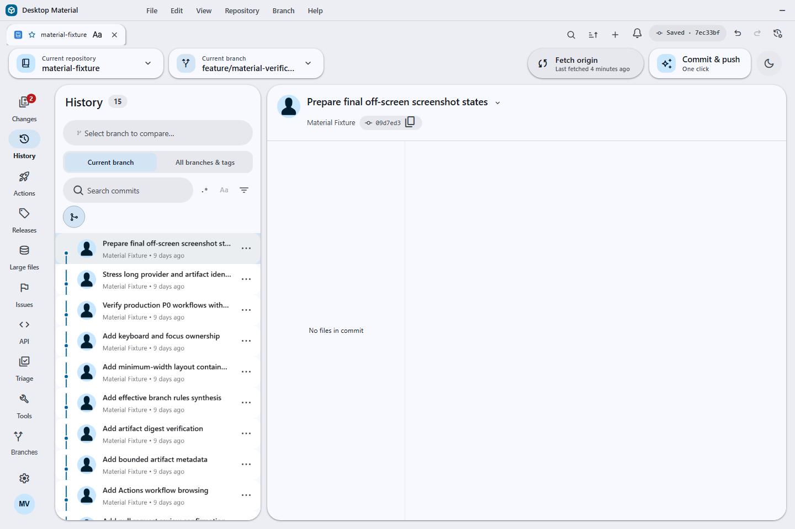
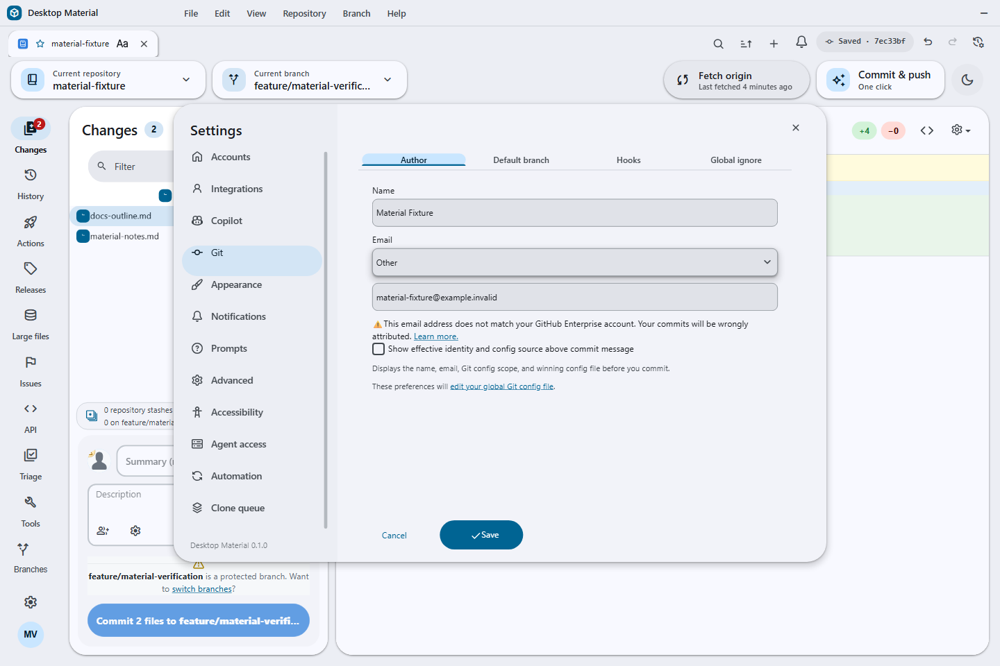

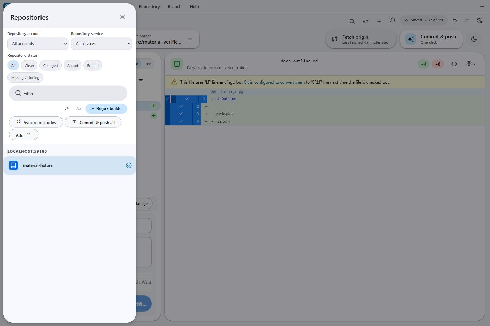
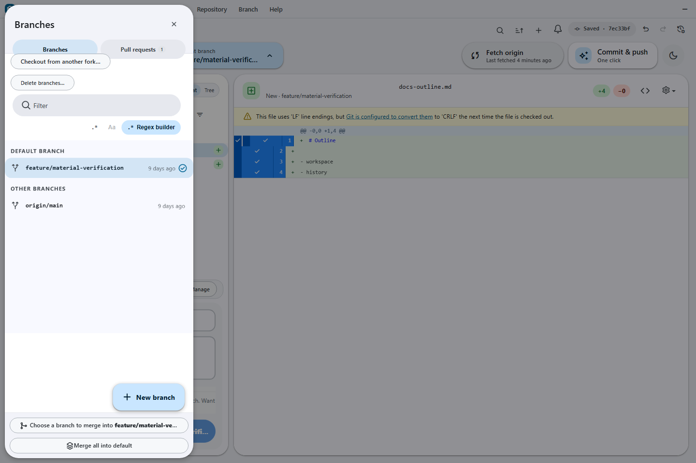
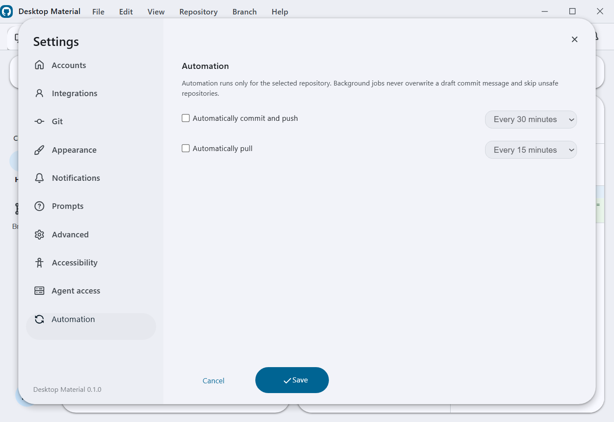
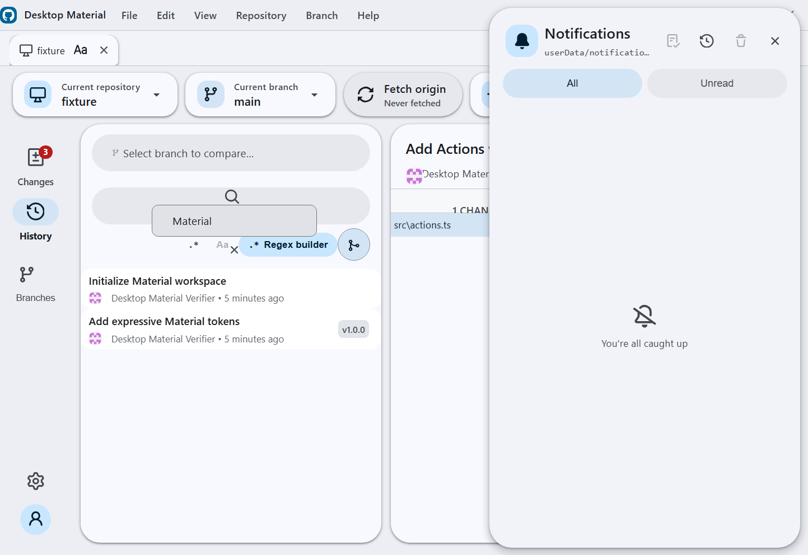
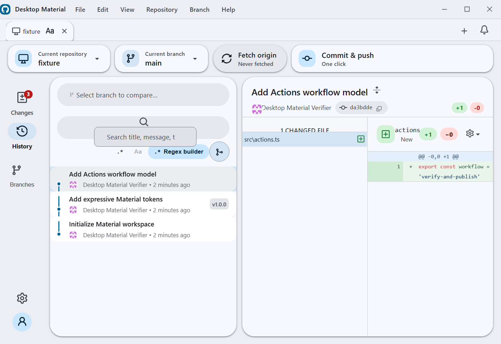
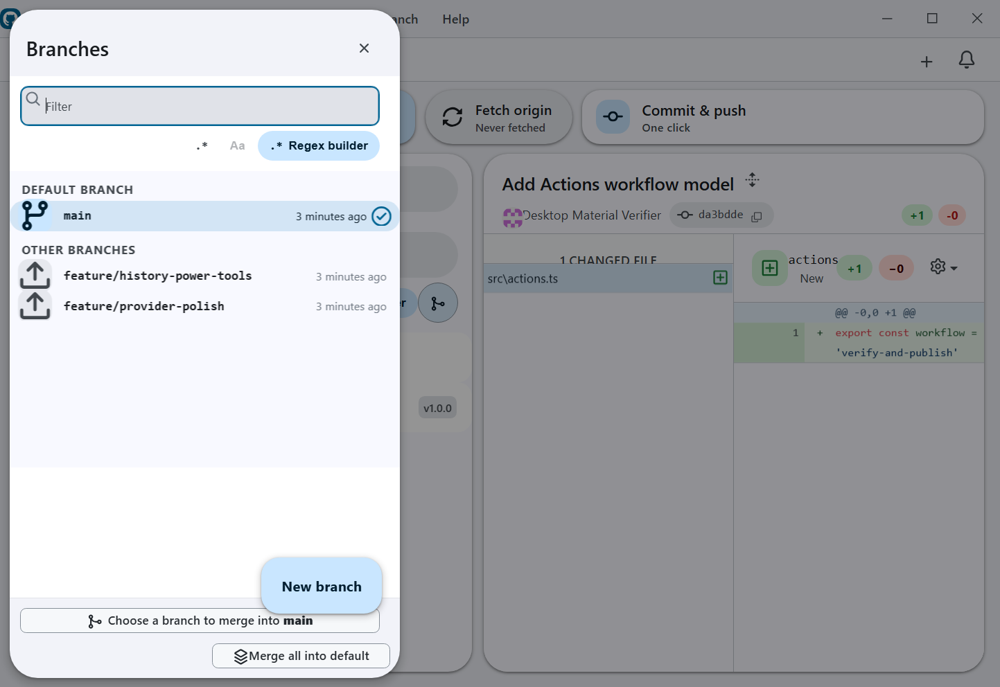
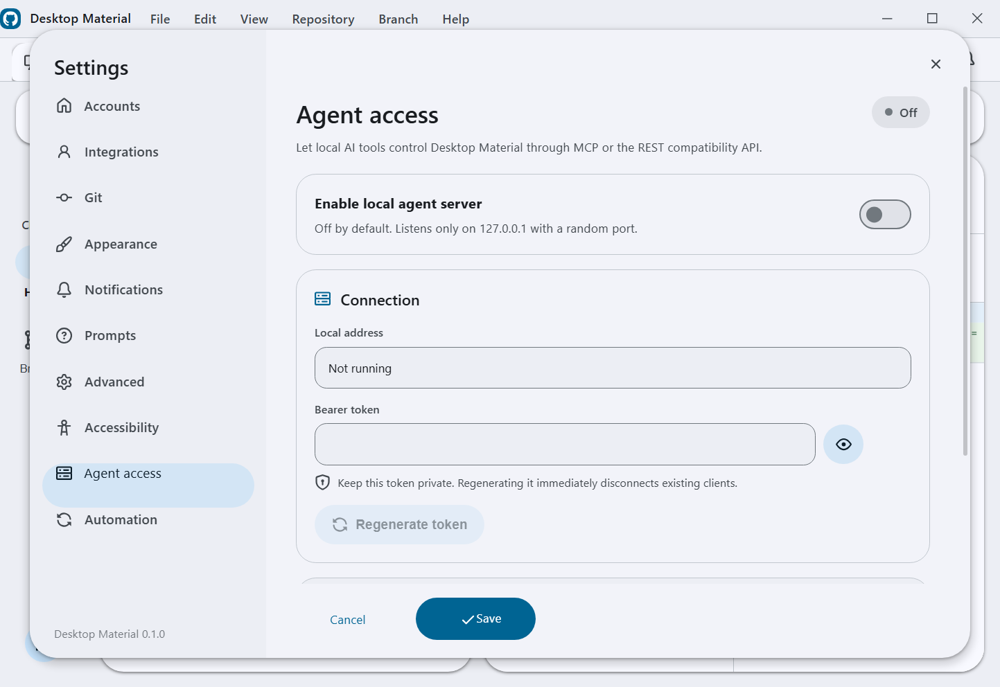
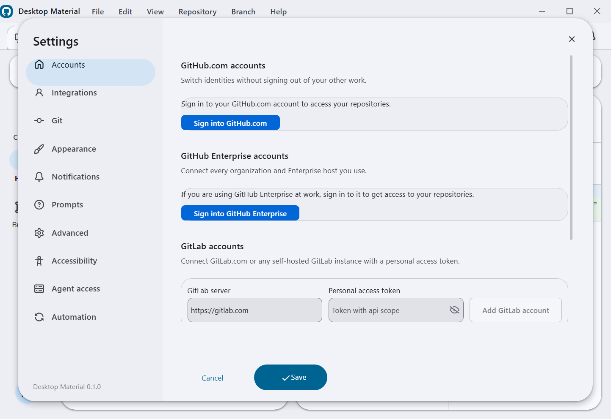
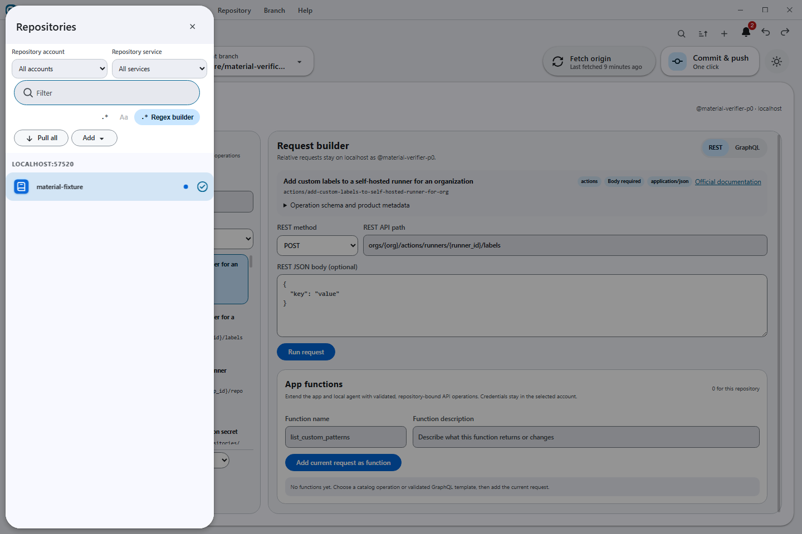
Clone the repo, follow the wiki, and try the M3 shell for yourself. Contributions welcome — it's early and moving fast.